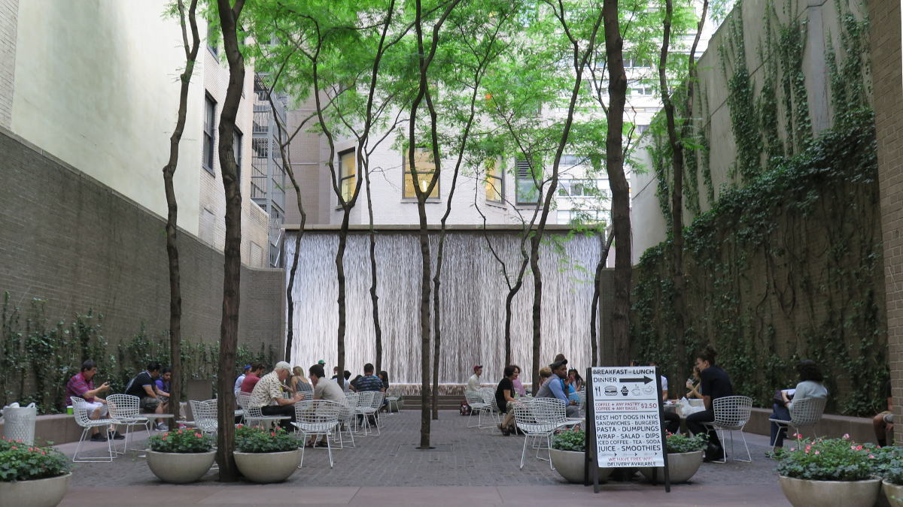

Acceptance
I am slowly beginning to realise I have unrealistically high expectations from people.
I need to accept you for who you are with all your flaws. And I need to you to accept me for who I am.
“Don't try to steer the boat. Don't open shop for yourself. Listen. Keep silent. You are not God's mouthpiece. Try to be an ear, And if you do speak, ask for explanations.” - Rumi